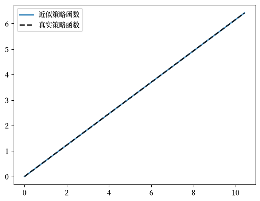
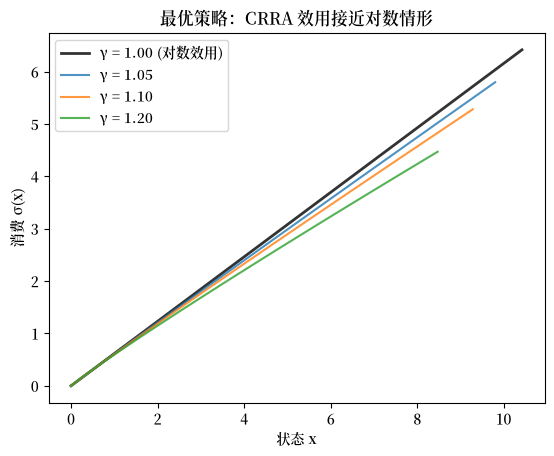

66. 最优储蓄 VI：使用 JAX 的 EGM#
GPU
本讲座是在配有GPU的机器上构建的——不过没有GPU也可以运行。
Google Colab 提供带GPU的免费套餐，使用方法如下：
点击右上角的”播放”图标
选择 Colab
将运行时环境设置为包含GPU
除了 Anaconda 中已有的内容外，本讲座还需要以下库：
!pip install quantecon jax
66.1. 概述#
在本讲座中，我们将使用 JAX 实现内生网格方法（EGM）。
本讲座建立在 最优储蓄 V：内生网格法 的基础上，该讲座使用 NumPy 介绍了 EGM。
通过转换为 JAX，我们可以利用快速线性代数、硬件加速器和 JIT 编译来提升性能。
我们还将使用 JAX 的 vmap 函数来完全向量化 Coleman-Reffett 算子。
让我们从一些标准导入开始：
import matplotlib.pyplot as plt
import jax
import jax.numpy as jnp
import quantecon as qe
from typing import NamedTuple
import matplotlib as mpl # i18n
FONTPATH = "fonts/SourceHanSerifSC-SemiBold.otf" # i18n
mpl.font_manager.fontManager.addfont(FONTPATH) # i18n
mpl.rcParams['font.family'] = ['Source Han Serif SC'] # i18n
66.2. 实现#
关于储蓄问题和内生网格方法（EGM）的详细信息，请参见 最优储蓄 V：内生网格法。
这里我们专注于 EGM 的 JAX 实现。
我们使用与 最优储蓄 V：内生网格法 相同的设定：
\(u(c) = \ln c\)，
生产是科布-道格拉斯型的，并且
冲击是对数正态的。
以下是用于比较的解析解。
def v_star(x, α, β, μ):
"""
真实值函数
"""
c1 = jnp.log(1 - α * β) / (1 - β)
c2 = (μ + α * jnp.log(α * β)) / (1 - α)
c3 = 1 / (1 - β)
c4 = 1 / (1 - α * β)
return c1 + c2 * (c3 - c4) + c4 * jnp.log(x)
def σ_star(x, α, β):
"""
真实最优策略
"""
return (1 - α * β) * x
Model 类仅存储数据（网格、冲击和参数）。
效用函数和生产函数将在全局定义，以便与 JAX 的 JIT 编译器协同工作。
class Model(NamedTuple):
β: float # 贴现因子
μ: float # 冲击位置参数
s: float # 冲击尺度参数
s_grid: jnp.ndarray # 外生储蓄网格
shocks: jnp.ndarray # 冲击抽样
α: float # 生产函数参数
def create_model(
β: float = 0.96,
μ: float = 0.0,
s: float = 0.1,
grid_max: float = 4.0,
grid_size: int = 120,
shock_size: int = 250,
seed: int = 1234,
α: float = 0.4
) -> Model:
"""
创建最优储蓄模型的一个实例。
"""
# 设置外生储蓄网格
s_grid = jnp.linspace(1e-4, grid_max, grid_size)
# 存储冲击（使用种子，以便结果可复现）
key = jax.random.PRNGKey(seed)
shocks = jnp.exp(μ + s * jax.random.normal(key, shape=(shock_size,)))
return Model(β, μ, s, s_grid, shocks, α)
我们在全局定义效用函数和生产函数。
# 定义效用函数和生产函数及其导数
u = lambda c: jnp.log(c)
u_prime = lambda c: 1 / c
u_prime_inv = lambda x: 1 / x
f = lambda k, α: k**α
f_prime = lambda k, α: α * k**(α - 1)
这是使用 EGM 的 Coleman-Reffett 算子。
这里的关键 JAX 特性是 vmap，它将计算向量化到各个网格点上。
def K(
c_in: jnp.ndarray, # 内生网格上的消费值
x_in: jnp.ndarray, # 当前内生网格
model: Model # 模型规格
):
"""
使用 EGM 的 Coleman-Reffett 算子
"""
β, μ, s, s_grid, shocks, α = model
σ = lambda x_val: jnp.interp(x_val, x_in, c_in)
# 定义在单个网格点上计算消费的函数
def compute_c(s):
# 近似边际效用 ∫ u'(σ(f(s, α)z)) f'(s, α) z ϕ(z)dz
vals = u_prime(σ(f(s, α) * shocks)) * f_prime(s, α) * shocks
mu = jnp.mean(vals)
# 计算消费
return u_prime_inv(β * mu)
# 向量化并在所有外生网格点上计算
compute_c_vectorized = jax.vmap(compute_c)
c_out = compute_c_vectorized(s_grid)
# 确定对应的内生网格
x_out = s_grid + c_out # x_i = s_i + c_i
return c_out, x_out
现在我们创建一个模型实例。
model = create_model()
s_grid = model.s_grid
求解器使用 JAX 的 jax.lax.while_loop 进行迭代，并且经过 JIT 编译以提高速度。
@jax.jit
def solve_model_time_iter(
model: Model,
c_init: jnp.ndarray,
x_init: jnp.ndarray,
tol: float = 1e-5,
max_iter: int = 1000
):
"""
使用带 EGM 的时间迭代求解模型。
"""
def condition(loop_state):
i, c, x, error = loop_state
return (error > tol) & (i < max_iter)
def body(loop_state):
i, c, x, error = loop_state
c_new, x_new = K(c, x, model)
error = jnp.max(jnp.abs(c_new - c))
return i + 1, c_new, x_new, error
# 初始化循环状态
initial_state = (0, c_init, x_init, tol + 1)
# 运行循环
i, c, x, error = jax.lax.while_loop(condition, body, initial_state)
return c, x
我们从一个初始猜测开始求解模型。
c_init = jnp.copy(s_grid)
x_init = s_grid + c_init
c, x = solve_model_time_iter(model, c_init, x_init)
让我们将得到的策略与解析解进行对比绘图。
fig, ax = plt.subplots()
ax.plot(x, c, lw=2,
alpha=0.8, label='近似策略函数')
ax.plot(x, σ_star(x, model.α, model.β), 'k--',
lw=2, alpha=0.8, label='真实策略函数')
ax.legend()
plt.show()
findfont: Failed to find font weight normal, now using 600.

拟合效果非常好。
max_dev = jnp.max(jnp.abs(c - σ_star(x, model.α, model.β)))
print(f"Maximum absolute deviation: {max_dev:.7}")
Maximum absolute deviation: 3.814697e-06
由于 JIT 编译和向量化，JAX 实现非常快。
with qe.Timer(precision=8):
c, x = solve_model_time_iter(model, c_init, x_init)
jax.block_until_ready(c)
0.00907087 seconds elapsed
这种速度来自于：
对整个求解器进行 JIT 编译
通过 Coleman-Reffett 算子中的
vmap进行向量化使用
jax.lax.while_loop而非 Python 循环全程使用高效的 JAX 数组操作
66.3. 练习#
练习 66.1
求解具有 CRRA 效用的最优储蓄问题
比较 \(\gamma\) 从上方接近 1 时（例如 1.05、1.1、1.2）的最优策略。
证明当 \(\gamma \to 1\) 时，最优策略收敛到使用对数效用（\(\gamma = 1\)）得到的策略。
提示：使用接近 1 的 \(\gamma\) 值以确保内生网格具有相似的覆盖范围，从而使可视化比较更容易。
解答 练习 66.1
我们需要创建一个能够处理 CRRA 效用的 Coleman-Reffett 算子和求解器版本。
关键在于将效用函数用 \(\gamma\) 参数化。
def u_crra(c, γ):
return (c**(1 - γ) - 1) / (1 - γ)
def u_prime_crra(c, γ):
return c**(-γ)
def u_prime_inv_crra(x, γ):
return x**(-1/γ)
现在我们创建一个以 \(\gamma\) 作为参数的 Coleman-Reffett 算子版本。
def K_crra(
c_in: jnp.ndarray, # 内生网格上的消费值
x_in: jnp.ndarray, # 当前内生网格
model: Model, # 模型规格
γ: float # CRRA 参数
):
"""
使用 EGM 和 CRRA 效用的 Coleman-Reffett 算子
"""
# 简化名称
β, α = model.β, model.α
s_grid, shocks = model.s_grid, model.shocks
# 使用内生网格对策略进行线性插值
σ = lambda x_val: jnp.interp(x_val, x_in, c_in)
# 定义在单个网格点上计算消费的函数
def compute_c(s):
vals = u_prime_crra(σ(f(s, α) * shocks), γ) * f_prime(s, α) * shocks
return u_prime_inv_crra(β * jnp.mean(vals), γ)
# 使用 vmap 在网格上向量化
compute_c_vectorized = jax.vmap(compute_c)
c_out = compute_c_vectorized(s_grid)
# 确定对应的内生网格
x_out = s_grid + c_out # x_i = s_i + c_i
return c_out, x_out
我们还需要一个使用该算子的求解器。
@jax.jit
def solve_model_crra(model: Model,
c_init: jnp.ndarray,
x_init: jnp.ndarray,
γ: float,
tol: float = 1e-5,
max_iter: int = 1000):
"""
使用带 EGM 和 CRRA 效用的时间迭代求解模型。
"""
def condition(loop_state):
i, c, x, error = loop_state
return (error > tol) & (i < max_iter)
def body(loop_state):
i, c, x, error = loop_state
c_new, x_new = K_crra(c, x, model, γ)
error = jnp.max(jnp.abs(c_new - c))
return i + 1, c_new, x_new, error
# 初始化循环状态
initial_state = (0, c_init, x_init, tol + 1)
# 运行循环
i, c, x, error = jax.lax.while_loop(condition, body, initial_state)
return c, x
现在我们对 \(\gamma = 1\)（对数效用）以及从上方接近 1 的值进行求解。
γ_values = [1.0, 1.05, 1.1, 1.2]
policies = {}
endogenous_grids = {}
model_crra = create_model()
for γ in γ_values:
c_init = jnp.copy(model_crra.s_grid)
x_init = model_crra.s_grid + c_init
c_gamma, x_gamma = solve_model_crra(model_crra, c_init, x_init, γ)
jax.block_until_ready(c_gamma)
policies[γ] = c_gamma
endogenous_grids[γ] = x_gamma
print(f"Solved for γ = {γ}")
Solved for γ = 1.0
Solved for γ = 1.05
Solved for γ = 1.1
Solved for γ = 1.2
在各自的内生网格上绘制策略。
fig, ax = plt.subplots()
for γ in γ_values:
x = endogenous_grids[γ]
if γ == 1.0:
ax.plot(x, policies[γ], 'k-', linewidth=2,
label=f'γ = {γ:.2f} (对数效用)', alpha=0.8)
else:
ax.plot(x, policies[γ], label=f'γ = {γ:.2f}', alpha=0.8)
ax.set_xlabel('状态 x')
ax.set_ylabel('消费 σ(x)')
ax.legend()
ax.set_title('最优策略：CRRA 效用接近对数情形')
plt.show()
findfont: Failed to find font weight normal, now using 600.

注意，\(\gamma > 1\) 的图形并未覆盖所示的整个 x 轴范围。
这是因为内生网格 \(x = s + \sigma(s)\) 取决于消费策略，而消费策略随 \(\gamma\) 变化。
让我们检查对数效用情形（\(\gamma = 1.0\)）与从上方接近的值之间的最大偏差。
for γ in [1.05, 1.1, 1.2]:
max_diff = jnp.max(jnp.abs(policies[1.0] - policies[γ]))
print(f"Max difference between γ=1.0 and γ={γ}: {max_diff:.6}")
Max difference between γ=1.0 and γ=1.05: 0.6192
Max difference between γ=1.0 and γ=1.1: 1.1362
Max difference between γ=1.0 and γ=1.2: 1.94592
正如预期，随着 \(\gamma\) 从上方接近 1，差异逐渐减小，这证实了收敛性。